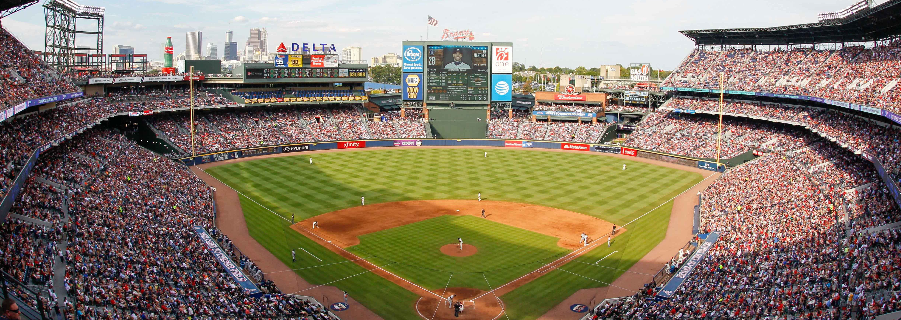

Projects
Some works I have done
Baseball Analytics
What was the 6th bullet point of my home page?
"Enjoys playing fantasy baseball"
This idea came up in 2019 when I was trying to find which players in free agency are worth rostering. When you are in a league with 16 players. It becomes really hard to identify the next breakout player in the free agency pool.
Grocery Prices

I love saving money
Whether it's going on slickdeals or reading up on the weekly Costco flyers, you know I'll be doing the research to see what is the best deal. This idea has been in my mind for a couple of years now but the technology was not available yet. Rewind just three years ago, online grocery shopping was not a thing. Grocers publishing their prices on their website was also not available too. But now that COVID-19 has been in full swing, more and more people have turned to online grocery shopping. Now grocers like Tom & Thumb, Albertsons, and Central Market are publishing their prices online and are offering online shopping. Kudos to Kroger for proviidng a public API.
With all the pieces in place, the time to bring an idea to life is now.
The two packages that I used was Selenium and BeautifulSoup. Selenium to automate the process of opening a chrome browser and typing in an item in a search box. BeautifulSoup to parse through the html file and grab the relevant information.